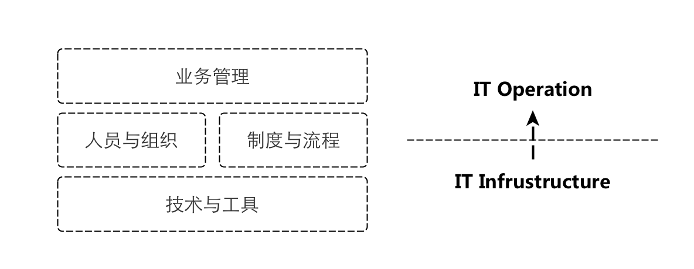

华东互联网+技术峰会回顾
陨石 - yunshi AT wacai DOTA com
2015-09-21
以下文字为扶墙老师一家之言，权作参考，扶墙老师在运维方面属于菜鸟级别 ;)
本期峰会Word Cloud
运维发展方向
视角与维度一
- 运维1.0 - 监控
- 运维2.0 - 工具化和自动化
- 运维3.0 - 动态变更（比如阿里的单元化 1）
视角与维度二
- Tooling & Automation（工具化和自动化）
- Private Cloud （构建私有云）
- 所谓云计算，即ITIL + CMDB + Automation
- DCOS
视角与维度三
- 运维自助化， 自动化
- 场景自动化
- 智能化（数据驱动动态变更？）
运维组织的建设与发展

运维之道
运维职能减少人为事故，但无法完全避免！！！
边界的权衡， 比如内外网与否
三分基础设施建设， 七分运维体系建设
原子件 + 复合件的思想延伸
制度与流程
运维流程实践一
作业通告 -> 确认单(Checklist) -> 操作（人） -> 检查（人）
软件交付链路实践与理念
交付点 -> 应用编排上线运行 -> 托付 from DaoClound
NOTE
实际上，单元化也好， 透明化也罢，本质上是看你对不同粒度资源的动态调配能力。
入职考察
腾讯现在运维人员入职都要进行上岗考试， 通过了才可以上岗， 另外，他们入职都要进行血泪史的破冰。
运维之术
可视化(一图胜千言）
服务目录管理入口与上帝节点
服务注册与发现
容灾预案
- IDC粒度
- 单元粒度， eg. 异地多活
- 网络层面
- …
统一路由管理（阿里的案例）
覆盖如下层面， 20秒最快更新
- 统一接入层（nginx）
- RPC框架
- 异步消息
- 数据层
网络基础数据
- IDC机房内(Intra-IDC)， 0.2ms
- 城域网内（跨机房）(Intra-City)， 1ms
- 跨城（Inter-City）， 10ms ~ 100ms
产业链
硬件
- DELL VS. Inspur(浪潮)
- 服务器市场
- H3C
- 网络设备 2
CDN市场
- 脉创
- 阿里云
- 腾讯云
- 七牛
- upyun
- 蓝汛
- 迅雷
- …
运维血泪史案例分享
- 交付的裸服务器被种木马 （腾讯游戏）
- 做好上线检查
- RAID卡电池充放电禁止cache导致服务器变慢
- 推迟充放电时间点（因为无法禁止）
- 可以加上我们自己最近一次发生的机房内光纤故障
术语
- TCO = Total Cost of Ownership， 总所有成本
- Cloud Cube Model
- ITIL = IT服务管理规范，只是概念
- ITSM = IT Service Management， IT服务治理
「为AI疯狂」星球上，扶墙老师正在和朋友们讨论有趣的AI话题，你要不要⼀起来呀？^-^
这里
- 不但有及时新鲜的AI资讯和深度探讨
- 还分享AI工具、产品方法和商业机会
- 更有原价1000多的付费内容(近500分钟)等着你，加入星球(https://t.zsxq.com/0dI3ZA0sL) 即可免费领取!